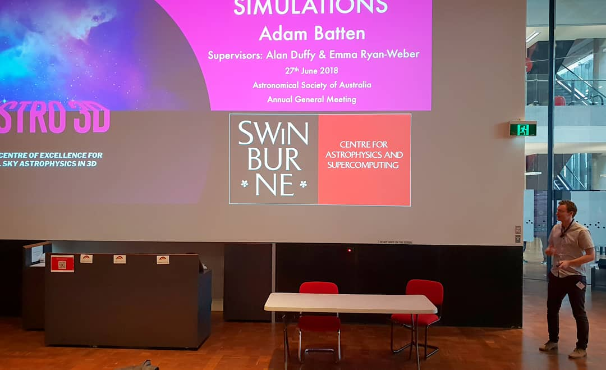

Aenean ornare velit lacus, ac varius enim lorem ullamcorper dolore aliquam.
The project as a whole is to look at the metallicity of the early galaxies and the IGM during the Epoch of Reionisation. Determining the manner in which the metals pollute the IGM and then possibly become re-accreted onto growing galaxies is an important question.
To do this we are taking a two pronged approach: First we have The Aurora simulations (3D hydrodynamic + radiative transfer simulations of the Universe from z=127 to z=6 in a 25 h^-1 Mpc box). The Aurora tracks gas, stars, DM and most importantly the ionisation states and the mass fractions of each of the metals in the IGM (i.e. O, C, N, Mg, etc..) from these simulations we should be able to determine the ionisation states of all metals and their distribution in the IGM.
Second, we have MUSE data of a redshift 6 quasar (not sure of the exact object yet). The metals in the IGM that fall in the line-of-sight of the quasar will show up in the quasars spectra, indicating low luminosity galaxies close to the line of sight (see picture below). The existing galaxy finding code for MUSE does not find all these galaxies. We want to apply a new algorithm for finding these galaxies which has been shown to be good in radio data cubes.

Aenean ornare velit lacus, ac varius enim lorem ullamcorper dolore aliquam.

Aenean ornare velit lacus, ac varius enim lorem ullamcorper dolore aliquam.

Aenean ornare velit lacus, ac varius enim lorem ullamcorper dolore aliquam.